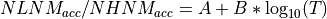
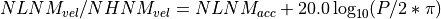
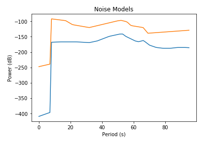

pycheron.psd.noise.noiseModel¶
-
noiseModel(freq)[source]¶ The noiseModels function returns the New High Noise Model and New Low Noise Model from the Peterson paper. Values are returned for the specific frequencies specified in the freq argument. [1] [2] [3]
New Low/High Noise Model in acceleration (referenced to 1 (m/s^2)^2/Hz):

where, T = minimum period
If velocity desired:

- Source code to compare:
Parameters: freq (numpy.ndarray) – array of frequencies Returns: - nlnm - low noise model
- nhnm - high noise model
Return type: - numpy.ndarray
- numpy.ndarray
Example
from pycheron.psd.noise.noiseModel import noiseModel from pycheron.psd.noise.getNoise import getNoise from pycheron.psd.psdList import psdList #test data data = 'test/test_data/6e_sp06_ehe.407438.tar.mseed' # reading in stream st = obspy.read(data) # calculating psds psds = psdList(st) # Get instrument corrected psds f,n,psd = getNoise(psds) freq = f[0] period = 1/freq # calculating nhnm, nlnm nlnm,nhnm = noiseModel(freq)
Plotting
import matplotlib.pyplot as plt # Normally shown on log xscale need to update plt.plot(nlnm[::-1]) plt.plot(nhnm[::-1]) plt.title('Noise Models') plt.xlabel('Period (s)') plt.ylabel('Power (dB)')
References
[1] Peterson, J, 1993, Observations and Modeling of Seismic Background Noise, U.S.G.S. OFR-93-322 [2] McNamara and Buland, 2003, Ambient Noise Levels in the Continental United States (https://pdfs.semanticscholar.org/ed3a/a907fd7a541c8bfb691ddf896df495c406dc.pdf) [3] McNamara and Boaz, 2005, Seismic Noise Analysis System Using Power Spectral Density Probability Density Functions: A Stand-Alone Software Package (https://pubs.usgs.gov/of/2005/1438/pdf/OFR-1438.pdf)